アウトライン解析に関連する機能として以下の機能があります。
基本的には「アウトライン解析の枠」の設定が必要ですが、「折りたたみ」と「部分編集」は、範囲選択から実行できます。
各機能を使うには「見出しバー」や「折りたたみの空白」を表示させます。標準では非表示になっていて、表示するには以下の ">>" を押す事で表示可能です。
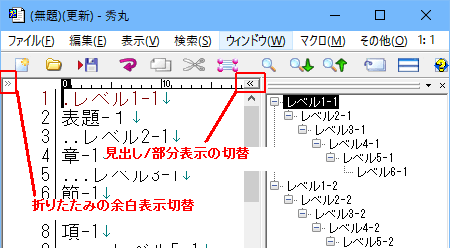
もう一度 ">>" を押す事で非表示になります。
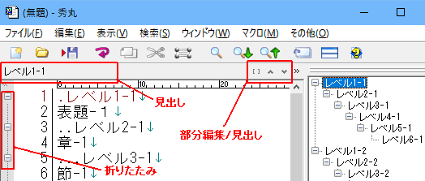
カーソルが今どこにあるかを表示します。設定により表示しない事も可能です。 (「アウトライン解析の枠 - 見出しバーに表示する対象」)
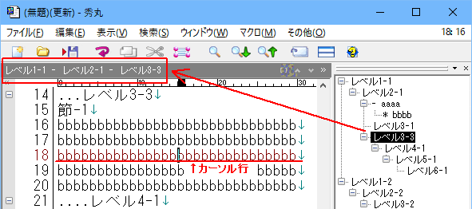
見出しバーの矢印を押す事で、見出しの移動が可能です。
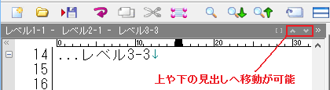
エディタ上の本文を、見出し単位で折りたたむ事が出来ます。折りたたみ可能な箇所は、 で示されます。
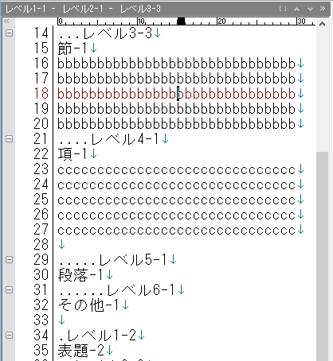
「レベル3-3」で折りたたむと、それ以下のレベルまで折りたたまれます。 をクリックすると展開されます。
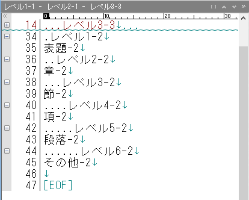
アウトラインの見出しだけではなく、選択範囲を折りたたむ事も可能です。「見出し」ではないので、マーカーが異なります。
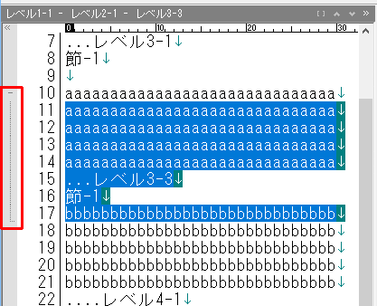
範囲選択すると範囲を示すマーカーが出るので、クリックすると折りたたまれます。
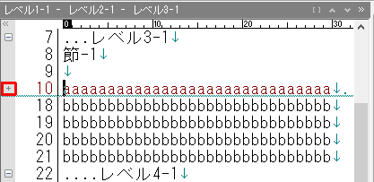
折りたたみの設定
折りたたみに関する設定は、「ファイルタイプ別の設定」-「アウトライン」-「折りたたみ」で変更が可能です。
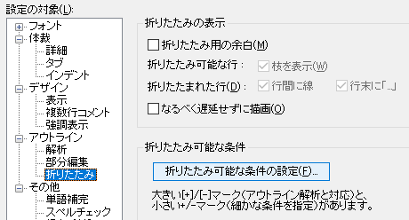
「折りたたみ可能な条件」にある「折りたたみ可能な条件の設定」を押すと詳細設定も可能です。
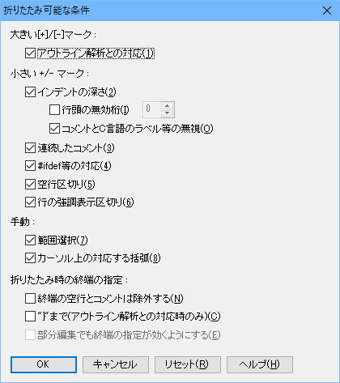
エディタ上の本文を、見出し単位で部分編集状態にする事が出来ます。部分編集になると、グレーアウトされた箇所は編集できません。検索や置換も、部分編集内に限定されます。
部分編集可能な箇所は、 で示され、範囲は点線で示されます。
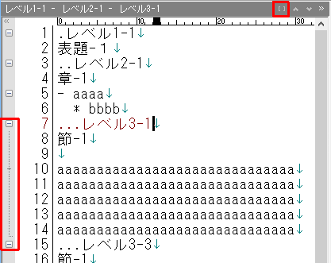
「レベル3-1」にカーソルがある状態で、見出しバーにある をクリックすると部分編集モードになります。
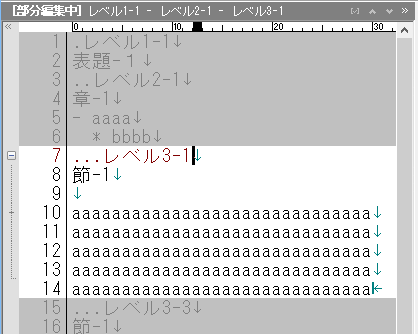
折りたたみと同様に、選択範囲を部分編集にできます。
部分編集対象外部分の表示方法
デフォルト状態では、部分編集の対象外部分はグレーアウトしますが、表示方法は「ファイルタイプ別の設定」-「アウトライン」-「部分編集」-「部分編集の表示」で変更が可能です。
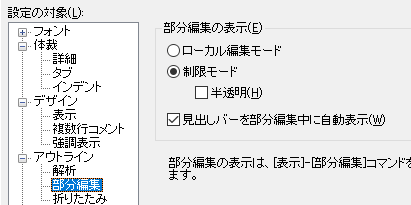
デフォルトは「制限モード」になっていて、対象外部分はグレーアウトします。「半透明」にチェックを入れると、対象外部分が半透明になりますが、白背景だとわかりにくいので黒背景に変えてみます。
画面配色の関係で、グレーアウトでは見にくい場合は半透明を使う方法もあります。
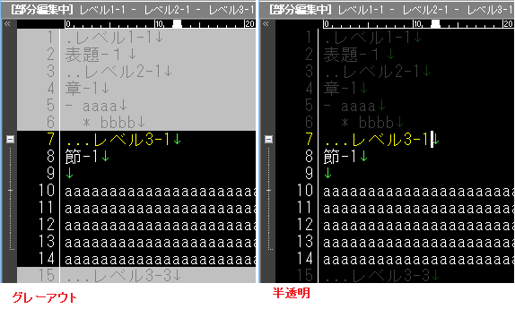
ローカル編集モードは、部分編集部分のみ表示され、あたかも別の文章のように表示されます。 (行番号も先頭が1から表示される)
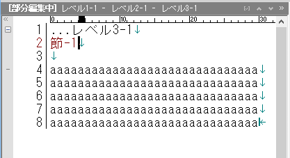
「折りたたみ」や「部分編集」中にマクロを実行する場合は注意が必要です。
エディタ画面上で、「折りたたみ」や「部分編集」部分をカーソル移動させても解除される事はありません。しかし、マクロを使いカーソル移動させた場合、「折りたたみ」や「部分編集」が解除されてしまいます。これは、マクロの互換性を維持するための動作になります。
エディタ画面上の操作と同じようにマクロを動作させたい場合は「setcompatiblemode文」を使います。
setcompatiblemode文の詳細は、マクロヘルプを参照してください。
エディタ画面上と同じく、折りたたみを解除したくない場合は、以下の値をセットします。
setcompatiblemode 0x00000003; //折りたたみを維持エディタ画面上と同じく、部分編集を解除したくない場合は、以下の値をセットします。
setcompatiblemode 0x0000000c; //部分編集を維持